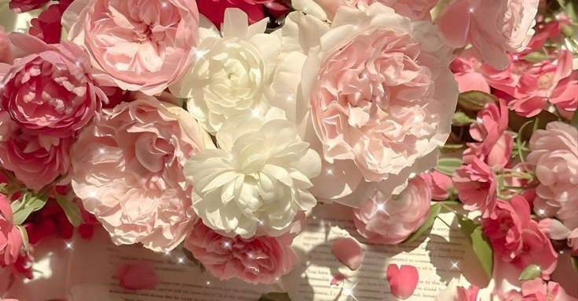
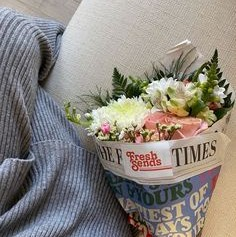
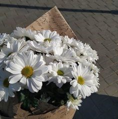
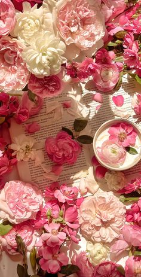
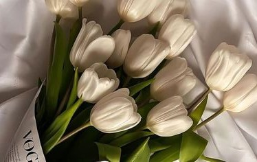

Guide to Choosing and Preserving Fresh Flowers
Guide to Choosing and Preserving Fresh Flowers
Choosing Fresh Flowers
- Know Your Occasion: Select flowers that fit the event, whether it’s a wedding, birthday, or
sympathy.
- Check Freshness
- Seasonality: Opt for seasonal flowers for better freshness and value.
- Fragrance: Choose fragrant blooms if scent is important.
- Mix and Match: Combine different flowers for a balanced arrangement.
Preserving Fresh Flowers
- Trim the Stems: Cut stems at an angle to improve water absorption.
- Use Clean Water: Fill a clean vase with fresh, room-temperature water.
- Remove Lower Leaves: Strip away any leaves that will be submerged to prevent bacteria.
- Keep Flowers Cool: Store arrangements in a cool place, away from direct sunlight.
- Change the Water Regularly: Replace the water every two days and trim stems as needed.
- Mist the Petals: Lightly spray the flowers to keep them hydrated.
- Use Preservatives: Consider commercial flower preservatives or a homemade mix of sugar and vinegar.
- Store in the Fridge: For extended freshness, place flowers in the refrigerator overnight.
Choosing Fresh Flowers
- Know Your Occasion: Select flowers that fit the event, whether it’s a wedding, birthday, or sympathy.
- Check Freshness
- Seasonality: Opt for seasonal flowers for better freshness and value.
- Fragrance: Choose fragrant blooms if scent is important.
- Mix and Match: Combine different flowers for a balanced arrangement.
Preserving Fresh Flowers
- Trim the Stems: Cut stems at an angle to improve water absorption.
- Use Clean Water: Fill a clean vase with fresh, room-temperature water.
- Remove Lower Leaves: Strip away any leaves that will be submerged to prevent bacteria.
- Keep Flowers Cool: Store arrangements in a cool place, away from direct sunlight.
- Change the Water Regularly: Replace the water every two days and trim stems as needed.
- Mist the Petals: Lightly spray the flowers to keep them hydrated.
- Use Preservatives: Consider commercial flower preservatives or a homemade mix of sugar and vinegar.
- Store in the Fridge: For extended freshness, place flowers in the refrigerator overnight.

Trends in Modern Flower Decor
- Minimalism
- Wild and Natural Arrangements
- Bold Colors and Contrasts
- Dried and Preserved Flowers
- Floral Installations
- Personalization
- Scented Elements

How to Use Flowers
- Home Decor
- Special Occasions
- Gifts
- Events and Celebrations
- DIY Projects
- Wellness and Meditation
- Gardening

Effectively Starting and Managing a Flower Shop
- Research and Planning
- Location
- Licensing and Insurance
- Sourcing Supplies
- Design and Marketing
- Customer Service
- Financial Management
- Continual Learning

The Meaning of Gifting Flowers
- Expressions of Love
- Celebration and Joy
- Comfort and Sympathy
- Friendship and Appreciation
- Encouragement and Support
- Cultural Significance

Popular Flower Varieties
- Roses
- Lilies
- Tulips
- Sunflowers
- Chrysanthemums
- Daisies
- Orchids
- Carnations